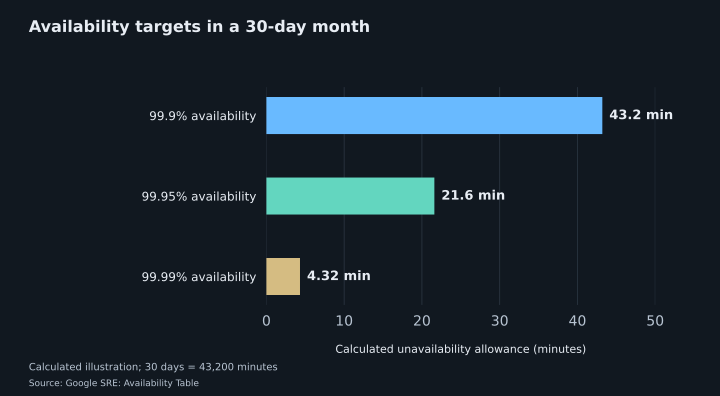

A business application can look like a single website while depending on a domain registrar, a hosting platform, a database, file storage, email delivery, and several external APIs. When everything works, those details stay in the background. When you need to move the system, recover a record, or change developers, they become business decisions.
Understanding where your business software lives gives you a practical form of control. You can identify the accounts you need, decide who should have access, plan a recovery, and compare hosting proposals on more than their first monthly invoice. You do not need to operate a data center to ask those questions well.
This guide explains cloud hosting, data location, software ownership, backups, reliability, and portability for business owners and product teams. The checklists describe my recommended review process. Provider documentation supports the technical distinctions, while the availability chart shows a transparent calculation rather than measured performance from any hosting company.
Start with a map of the whole service
Write down what happens when a customer visits the application and completes its main task. The domain points the browser toward a service. The interface loads. A server or API checks the request. The database stores business records. Other systems might send an email, process a payment, or generate a document.
That description becomes an application map. Keep it understandable enough for the business owner to use. Each component should have a purpose, an account owner, an operating contact, and a reference to the configuration or documentation. Avoid putting passwords in the map itself; record where authorized staff can retrieve them securely.
Include services outside the main hosting account. An application hosted in one place may still send documents to a different storage provider. A contact form may depend on a separate email service. A payment confirmation may arrive through a webhook. These connections can determine whether a seemingly simple migration succeeds.
Once the map exists, test it against an ordinary support question. If a customer says the form succeeded but no one received the request, can the team follow the path and identify where to investigate? A useful map should help someone act, rather than merely display a collection of platform logos.
Understand the difference between hosting models
With a virtual server, your team generally manages more of the operating environment. With a managed application platform, the provider handles more of the underlying runtime. With software as a service, you normally configure a product rather than deploy its application code yourself. These categories describe responsibility patterns, not a universal quality ranking.
AWS's shared responsibility model illustrates the distinction between security of the cloud and security in the cloud. The customer's responsibilities vary with the selected services. Moving to managed infrastructure does not remove the need to manage identities, permissions, application behavior, and the data you place there.
Choose a model that your team can operate. A low-cost server can become expensive if nobody owns updates and recovery. A managed service can be worthwhile when it removes work the business cannot support reliably. Conversely, a specialized requirement may justify more control and the engineering effort that comes with it.
Ask for the proposed responsibility split in writing. Who patches the runtime? Who restores the database? Who reviews application access? Who handles a failed deployment? Clear answers let you compare two hosting proposals that otherwise use the same reassuring words about security and reliability.
Account ownership is an operating requirement
A business should know which account controls its domain, hosting, database, billing, source repository, and production deployment. That does not mean every employee needs administrator access. It means the organization can retain authorized control when a contractor leaves or a staff member changes roles.
Prefer company-controlled accounts and named user access where the platform supports them. Enable appropriate multi-factor authentication and maintain a recoverable administrative path. A shared login passed around in chat makes it difficult to understand who changed a setting or to remove one person's access safely.
Separate everyday work from emergency administration. A developer may need deployment permissions without needing control of the domain registrar. A support colleague may need to view a case without exporting all customer records. Assign permissions around real tasks and review them as responsibilities change.
During handover, ask an authorized company representative to perform a routine action using the documentation. That might mean inviting another user, locating a backup, or viewing the latest deployment. This small exercise can reveal that the business technically owns an account but still depends on one person's undocumented knowledge to use it.
Data residency and operational control answer different questions
Data residency concerns where specified data resides. Operational control concerns who can administer the service and through which systems. A European database region is a meaningful configuration choice, but it does not by itself describe every support process, subprocessor, backup location, or external integration.
Begin with a data inventory. Identify customer records, uploaded files, logs, analytics events, backups, and support exports separately. Then map where each category goes. A hosting dashboard may show the primary database region while an email provider or monitoring service processes a different part of the same customer journey elsewhere.
Ask providers for current documentation and applicable contractual terms. Avoid treating a marketing phrase as the complete answer to a compliance requirement. The relevant obligations depend on the business, the data, and the jurisdictions involved. Technical architecture should give qualified legal or privacy advisers concrete facts to review.
For product planning, record which location requirements are essential and which are preferences. This helps the team avoid building around an assumption that later conflicts with a payment integration or customer contract. It also supports a more precise supplier conversation than asking whether an entire product is simply sovereign, local, or compliant.
A backup is useful when you can restore the service
An exported database file is one part of recovery. The application may also require uploaded documents, configuration, encryption keys, runtime settings, and the correct code version. A recovery plan should identify those dependencies and explain how an authorized person can assemble them into a functioning service.
Define the recovery point objective and recovery time objective in business terms. The first describes the amount of data loss the company aims to tolerate. The second describes how quickly it aims to restore the service. These are planning objectives that need evidence from the actual backup and recovery process.
For example, a fictional appointment business might decide that losing an entire working day of bookings would create unacceptable reconciliation work. That decision should influence backup frequency, retention, and any transaction logging. It should also influence the manual process staff use while the service remains unavailable.
Test restoration into a separate environment. Check that records, attachments, and access rules behave correctly. Record the time and any missing steps. A backup dashboard can confirm that a scheduled job ran; a restore exercise provides stronger evidence that the business can recover what it needs. Repeat the exercise after significant architectural changes.
Read availability percentages through the measurement
Availability has meaning only when you know what counts as a successful service, the observation window, and the exclusions. Google's Site Reliability Engineering guidance distinguishes indicators, objectives, and agreements. An observed indicator, an internal target, and a contractual promise serve different purposes.

| Group or target | Value |
|---|---|
| 99.9% availability | 43.2 minutes |
| 99.95% availability | 21.6 minutes |
| 99.99% availability | 4.32 minutes |
The chart calculates time-based unavailability for a hypothetical 30-day month: 43,200 minutes multiplied by one minus the availability fraction. It follows the arithmetic in Google's availability table. It does not measure a provider, predict an outage, or define the terms of a service-level agreement.
For your application, measure the journey customers need. A homepage can return a successful response while the booking database fails. A server can remain healthy while a payment confirmation queue stops processing. Consider both technical checks and carefully designed end-to-end checks that avoid creating unwanted real transactions.
Choose a target that reflects the business consequence and the resources available. Higher reliability usually requires additional design, monitoring, response capability, and testing. A percentage on a proposal should lead to a discussion of those mechanisms and responsibilities, rather than standing in for them.
Keep deployment separate from your source of truth
A deployment publishes a particular version of the application. The source repository records the code and its history. The database holds live business state. Treating those as distinct assets helps the team recover from a bad release without confusing code rollback with data restoration.
Maintain a repeatable deployment process with documented configuration. Someone should be able to identify the version running in production, the checks that preceded its release, and the previous version that could be restored. Keep credentials outside the code and grant deployment systems only the permissions they need.
Database changes deserve special planning. A previous application version may no longer understand a newly changed schema. A rollback button cannot automatically undo every migration safely. Review compatibility and backup needs before applying a structural change to live records.
Also preserve the infrastructure decisions that affect operation: environment variables by name, service bindings, DNS records, scheduled jobs, and storage policies. The documentation should explain how to recreate them without publishing secret values. This turns a repository from a collection of files into a maintainable system another engineer can deploy and support.
Portability starts with a practical export test
Ask what you can retrieve, in what format, and what you would need to use it elsewhere. A customer CSV may omit attachments, relationship identifiers, permissions, or activity history. A code export may still depend on hosted services. Export availability and independent maintainability are separate questions.
WeWeb's export documentation, for example, distinguishes built files from source files and explains responsibilities when self-hosting. It also warns that independently editing its generated code is difficult. That is a specific product's documented behavior, not a rule for every no-code platform.
Run a small portability exercise before the application becomes critical. Export representative records, inspect the relationships, and determine whether attachments and identifiers remain useful. If self-hosting matters, deploy a permitted export in a test environment and document the external services it still requires.
Prioritize the exit path that the business actually needs. A company may accept a proprietary interface if its records remain portable and the service offers good operational value. Another may require maintainable source code and infrastructure configuration. A deliberate tradeoff can be reasonable; an unexamined dependency becomes difficult to manage when circumstances change.
Cost control needs more than the server invoice
Cloud spending can include compute, database capacity, storage, requests, outbound transfer, logs, backup retention, email delivery, and external APIs. The combination depends on the architecture and provider. Compare options using the workload you expect rather than assuming a free tier describes the cost of a live business system.
Build a simple cost model with normal, quiet, and busy scenarios. State the assumptions for active users, files, traffic, scheduled work, and retention. Avoid presenting a provider's current rate as permanent. Link the model to the applicable pricing pages when the project reaches a purchasing decision.
Include the people operating the service. A cheaper infrastructure bill can come with more manual maintenance. A managed database may cost more directly while reducing tasks the team would otherwise need to schedule. The useful comparison combines spending with the responsibilities and service level you actually receive.
Assign budget ownership and alerts. An alert tells someone that usage changed; it does not necessarily stop spending. If the company needs hard limits or automatic shutdowns, verify how each service supports them and what interruption would do to customers. My FinOps and cloud cost guide explores the operating discipline behind these decisions.
An application that sleeps still has responsibilities
A personal research tool and a customer-facing service can have very different operating needs. You may choose to run a private SEO crawler only when you need it. A customer portal, scheduled sync, or payment endpoint may need to remain available even when you are away from your desk.
List background tasks before deciding to pause infrastructure. A stopped worker may miss scheduled collection, delay email, or leave incoming webhook events unprocessed. Some providers retry deliveries, but the rules vary. Check the actual integration and design a reconciliation path for events the system did not process.
Preserve durable state outside temporary execution environments. If a task stops halfway through a crawl or import, the application should know which records completed and which remain pending. A restart should resume deliberately rather than duplicate work or silently discard partial results.
For a tool you operate on demand, document a startup checklist and a shutdown checklist. Confirm credentials, pending jobs, backups, and budget controls. Then check the latest successful data timestamp in the interface. A system that displays old information clearly can remain useful; a sleeping system that presents stale results as live information undermines trust.
Plan a migration around the customer journey
Begin a hosting migration by inventorying the current service and defining what must remain consistent. Include URLs, authentication, stored files, email behavior, scheduled jobs, and third-party callbacks. Moving the interface alone may leave the most important operational work behind.
Create a test environment and move a safe, representative dataset. Check the main tasks with each user role. Confirm that links, redirects, uploaded documents, and notifications behave as expected. Compare record counts and selected relationships rather than relying on the fact that the new homepage loads.
Define a cutover sequence. Decide how to handle writes during the transition, how to update DNS or routing, and how to detect success. A rollback plan should explain which actions remain possible after new data enters the destination. Once customers create new records there, returning to the old database may require reconciliation.
After cutover, keep monitoring the business journey and the technical service. Resolve old callbacks and subscriptions before closing accounts. Maintain the agreed evidence and retention arrangements. The migration finishes when the company can operate the new environment confidently, not merely when a domain begins pointing at a different address.
Build a handover that survives a change of people
A useful handover contains the application map, account ownership, deployment procedure, backup and restore instructions, monitoring references, and support contacts. It also explains the normal business task and the common exceptions. Technical setup without operational context leaves the next maintainer guessing why a rule exists.
Include a record of deliberate limitations. If the initial release supports a manual reconciliation step, state when staff use it and who owns the follow-up. If a service cannot meet a desired recovery target yet, keep that gap visible with a proposed next action.
Use a live walkthrough to check the document. Ask another authorized person to find a failed job, locate a deployment, and identify the current backup policy. The exercise should reveal unclear instructions while the original team remains available to explain them.
Review the handover after substantial changes. A new database, authentication provider, or payment integration can invalidate old instructions. Keeping the document near the source repository encourages it to change with the system. The goal is a company that understands what it runs and can make its next technical decision from evidence.
Inspect external events before switching off a service
Consider a fictional quotation platform that sends notifications after customers submit requests. Its interface, database, and email worker may run as separate services. Pausing only the interface could leave the worker running and spending money. Pausing every component could prevent new requests from receiving a response. The correct shutdown sequence depends on the architecture.
Write down which components accept work from outside and which only consume an internal queue. Then decide how the system rejects, defers, or records work during a pause. A visible maintenance message can help a person, but an API caller may need a meaningful status response and a documented retry process.
On restart, inspect pending work before enabling unrestricted processing. Old jobs may reference expired credentials or business conditions that have changed. A notification intended for immediate delivery may no longer be appropriate a week later. The application should make those decisions explicit rather than blindly replaying every unfinished task.
This is particularly relevant for data tools. A keyword dashboard that was offline should show the latest collection date and any gap in history. Restarting the application does not recreate observations it never collected. It may be possible to retrieve some historical source data, but that depends on the source and its retention.
Treat on-demand operation as a supported mode with its own instructions. That gives a personal tool a controlled, economical workflow while protecting the accuracy of what it displays.
Keep a small operational evidence pack
Create a shared set of references the business can inspect without needing unrestricted administrator access. Include the application map, the latest deployment identifier, the backup policy, the last successful restore exercise, the current cost assumptions, and the list of unresolved operational risks. Link to the authoritative systems rather than copying every detail into another document.
An evidence pack can help with an ordinary supplier change. A new maintainer can identify the runtime, database, storage, and release process before proposing work. The owner can see which accounts require invitations. This reduces dependence on a handover conversation in which important details might be forgotten.
Use dated records for exercises and observations. A successful restore from last year describes the system tested then; it may not cover a recently added file service. A monthly bill describes actual usage during that month, while a future projection remains an estimate. Keeping those distinctions visible makes the pack more trustworthy.
Include a plain-language consequence beside significant risks. Instead of database recovery incomplete, explain which records could be missing and what staff would need to reconstruct. The technical issue then becomes something the business can prioritize against its other commitments.
Review the pack at a proportionate interval and after substantial changes. It should remain a compact operating aid, not a second configuration system nobody maintains. The test is whether an authorized person can use it to make the next hosting, support, or recovery decision with less uncertainty.
Questions business owners often ask
Is cloud hosting always better than owning a server?
The answer depends on the workload, skills, control requirements, and operating budget. Compare the complete service and the responsibilities each option creates. A company should not choose an operating model it cannot maintain simply because the initial specification looks powerful.
Does owning the code mean we can move immediately?
Code ownership helps, but migration also needs data, configuration, credentials, service compatibility, and an operating process. Ask for a tested deployment path and a practical export. Ownership becomes useful when the business can exercise it.
What should we inspect first?
Start with domain control, named administrative access, a complete application map, and evidence of a successful restore. These checks often reveal the most consequential dependencies quickly. Then prioritize improvements according to the customer journey and the consequences of interruption.
Make hosting a decision your business can explain
The right cloud arrangement gives the company a workable balance of capability, cost, control, and support. You should be able to explain where the important records live, who can change the system, how recovery works, and what leaving a provider would involve. That knowledge supports growth and everyday operation alike.
I help businesses plan and build web applications, integrations, and maintainable deployment processes. Explore my application development services, compare the next decision through the buy, configure, or build guide, or tell me what your current system needs to support. We can turn a vague hosting concern into an application map, a prioritized technical plan, and a system your team can understand.
Sources and research notes
Primary publications and official documentation consulted for this guide. Research periods are stated beside the relevant claims and charts. Implementation checklists and worked examples represent my analysis; fictional examples are not client results. Reviewed 22 November 2026.